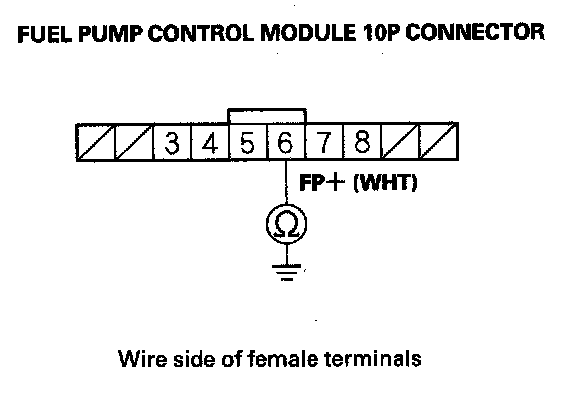

DTC Troubleshooting
DTC P0627: Fuel Pump Control Module System MalfunctionNOTE: Before you troubleshoot, record all freeze data and any on-board snapshot, and review the general troubleshooting information.
1. Turn the ignition switch ON (II).
2. Clear the DTC with the HDS.
3. Turn the ignition switch to the start (III) position.
NOTE: This vehicle has an auto control mode starting system. It keeps the starter motor running after the ignition switch is released for 15 seconds, or until the engine starts.
4. Check for Temporary DTCs or DTCs with the HDS.
Is DTC P0627 indicated?
YES - Go to step 5.
NO - Intermittent failure, the system is OK at this time. Check for poor connections or loose terminals at the fuel pump control module, PGM-FI main relay 2, the fuel tank unit, and the PCM.
5. Turn the ignition switch OFF.
6. Check the No. 19 FUEL PUMP (20 A) fuse in under-dash fuse/relay box.
Is the fuse blown?
YES - Replace the under-dash fuse/relay box. Also replace the No. 19 FUEL PUMP (20 A) fuse, then go to step 73.
NO - Go to step 7.
7. Disconnect the fuel pump control module 10P connector.
8. Turn the ignition switch ON (II), and measure voltage between fuel pump control module 10P connector terminals No. 3 and No. 8 within 2 seconds.
Is there battery voltage?
YES - Go to step 27.
NO - Go to step 9.
9. Turn the ignition switch OFF.
10. Remove the left kick panel, then remove PGM-FI main relay 2 (G) from the under-dash fuse/relay box.
11. Test PGM-FI main relay 2.
Is PGM-FI main relay 2 OK?
YES - Go to step 12.
NO - Replace PGM-FI main relay 2, then go to step 73.
12. Turn the ignition switch ON (II).
13. Measure voltage between PGM-FI main relay 2 4P connector terminal No. 4 and body ground.
Is there battery voltage?
YES - Go to step 18.
NO - Go to step 14.
14. Turn the ignition switch OFF.
15. Disconnect the under-hood fuse/relay box 9P connector.
16. Connect PGM-FI main relay 2 4P connector terminal No. 4 to body ground with a jumper wire.
17. Check for continuity between under-hood fuse/relay box 9P connector terminal No. 1 and body ground.
Is there continuity?
YES - Replace the relay control module (under-hood fuse/relay box) then go to step 74.
NO -
- Repair open in the wire between the under-hood fuse/relay box and the under-dash fuse/relay box, then go to step 74.
- If needed, replace the under-dash fuse/relay box, then go to step 74.
18. Measure voltage between PGM-FI main relay 2 4P connector terminal No. 1 and body ground.
Is there battery voltage?
YES - Go to step 19.
NO - Replace the under-dash fuse/relay box , then go to step 73.
19. Turn the ignition switch OFF.
20. Connect PGM-FI main relay 2 4P connector terminals No. 1 and No. 2 with a jumper wire.
21. Turn the ignition switch ON (II), and measure voltage between fuel pump control module 10P connector terminal No. 3 and body ground within 2 seconds.
Is there battery voltage?
YES - Go to step 22.
NO -
- Repair open in the wire between the under-dash fuse/relay box and the fuel pump control module, then go to step 73.
- If needed, replace the under-dash fuse/relay box , then go to step 73.
22. Turn the ignition switch OFF.
23. Jump the SCS line with the HDS.
24. Disconnect PCM connector A (49P).
25. Connect PGM-FI main relay 2 4P connector terminal No. 3 to body ground with a jumper wire.
26. Check for continuity between PCM connector terminal A11 and body ground.
Is there continuity?
YES - Go to step 79.
NO - Repair open in the wire between the PCM (All) and PGM-FI main relay 2, then go to step 73.
27. Turn the ignition switch OFF.
28. Reconnect the fuel pump control module 10P connector.
29. Turn the ignition switch ON (II).
30. Clear the DTC with the HDS.
31. Turn the ignition switch OFF.
32. Turn the ignition switch ON (II), and check for sound from the fuel pump within 2 seconds.
Does the fuel pump operate?
YES - Go to step 33.
NO - Go to step 53.
33. Turn the ignition switch OFF.
34. Disconnect the fuel pump control module 10P connector.
35. Check for continuity between fuel pump control module 10P connector terminal No. 4 and body ground.
Is there continuity?
YES - Go to step 36.
NO - Go to step 39.
36. Jump the SCS line with the HDS.
37. Disconnect PCM connector A (49P).
38. Check for continuity between PCM connector terminal A42 and body ground.
Is there continuity?
YES - Repair short in the wire between the PCM (A42) and the fuel pump control module, then go to step 73.
NO - Go to step 79.
39. Jump the SCS line with the HDS.
40. Disconnect PCM connector A (49P).
41. Connect fuel pump control module 10P connector terminal No. 4 to body ground with a jumper wire.
42. Check for continuity between PCM connector terminal A42 and body ground.
Is there continuity?
YES - Go to step 43.
NO - Repair open in the wire between the PCM (A42) and the fuel pump control module, then go to step 73.
43. Remove the jumper wire from the fuel pump control module 10P connector.
44. Reconnect the fuel pump control module 10P connector and PCM connector A (49P).
45. Turn the ignition switch ON (II).
46. Measure voltage between fuel pump control module 10P connector terminal No. 4 and body ground.
Is there about 8 V or more?
YES - Go to step 47.
NO - Replace the fuel pump control module, then go to step 73.
47. Turn the ignition switch OFF.
48. Remove the second row seat.
49. Remove the access panel from the floor.
50. Disconnect the fuel tank unit 4P connector.
51. Disconnect the fuel pump control module 10P connector.
52. Check for continuity between fuel pump control module 10P connector terminal No. 7 and body ground.
Is there continuity?
YES - Repair short in the wire between the fuel pump control module (FP- line) and the fuel tank unit, then go to step 73.
NO - Substitute a known-good fuel pump control module, then go to step 73 and recheck. If DTC P0627 is not indicated, replace the original fuel pump control module, then go to step 73. If DTC P0627 is indicated, go to step 80.
53. Turn the ignition switch OFF.
54. Disconnect the fuel pump control module 10P connector.
55. Check for continuity between fuel pump control module 10P connector terminal No. 8 and body ground.
Is there continuity?
YES - Go to step 56.
NO - Repair open in the wire between the fuel pump control module (GND line) and G604, then go to step 73.
56. Check for continuity between fuel pump control module 10P connector terminal No. 5 and body ground.
Is there continuity?
YES - Go to step 57.
NO - Go to step 60.
57. Jump the SCS line with the HDS.
58. Disconnect PCM connector A (49P).
59. Check for continuity between PCM connector terminal A43 and body ground.
Is there continuity?
YES - Repair short in the wire between the PCM (A43) and the fuel pump control module, then go to step 73.
NO - Go to step 79.
60. Reconnect the fuel pump control module 10P connector.
61. Turn the ignition switch ON (II), and measure voltage between PCM connector terminal A43 and body ground within 2 seconds.
Is there battery voltage?
YES - Go to step 62.
NO - Replace the fuel pump control module, then go to step 73.
62. Turn the ignition switch OFF.
63. Remove the second row seat.
64. Remove the access panel from the floor.
65. Disconnect the fuel tank unit 4P connector.
66. Disconnect the fuel pump control module 10P connector.
67. Connect between fuel tank unit 4P connector terminal No. 2 to body ground with a jumper wire.

68. Check for continuity between fuel pump control module 10P connector terminal No. 6 and body ground.
Is there continuity?
YES - Go to step 69.
NO - Repair open in the wire between the fuel pump control module (FP+ line) and the fuel tank unit, then go to step 73.
69. Connect between fuel tank unit 4P connector terminal No. 4 to body ground with a jumper wire.
70. Check for continuity between fuel pump control module 10P connector terminal No. 7 and body ground.
Is there continuity?
YES - Go to step 71.
NO - Repair open in the wire between the fuel pump control module (FP- line) and the fuel tank unit, then go to step 73.
71. Reconnect the fuel pump control module 10P connector.
72. Turn the ignition switch ON (II), and measure voltage between fuel tank unit 4P connector terminal No. 2 and body ground within 2 seconds.
Is there battery voltage?
YES - Replace the fuel tank unit, then go to step 73.
NO - Substitute a known-good fuel pump control module, then go to step 73 and recheck. If DTC P0627 is not indicated, replace the original fuel pump control module, then go to step
73. If DTC P0627 is indicated, go to step 80.
73. Turn the ignition switch OFF.
74. Reconnect all connectors.
75. Turn the ignition switch ON (II).
76. Reset the PCM with the HDS.
77. Do the PCM idle learn procedure.
78. Check for Temporary DTCs or DTCs with the HDS.
Is DTC P0627 indicated?
YES - Check for poor connections or loose terminals at the fuel pump control module, PGM-FI main relay 2, the fuel tank unit, and the PCM, then go to step 1.
NO - Troubleshooting is complete. If any other Temporary DTCs or DTCs are indicated, go to the indicated DTCs troubleshooting.
79. Reconnect all connectors.
80. Update the PCM if it does not have the latest software, or substitute a known-good PCM.
81. Check for Temporary DTCs or DTCs with the HDS.
Is DTC P0627 indicated?
YES - Check for poor connections or loose terminals at the fuel pump control module, PGM-FI main relay 2, the fuel pump, and the PCM. If the PCM was updated, substitute a known-good PCM, then recheck. If the PCM was substituted, go to step 1.
NO - If the PCM was updated, troubleshooting is complete. If the PCM was substituted, replace the original PCM. If any other Temporary DTCs or DTCs are indicated, go to the indicated DTCs troubleshooting